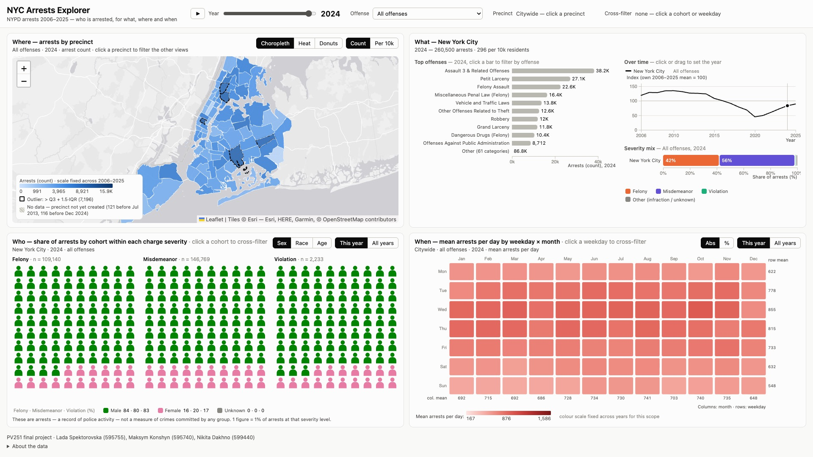
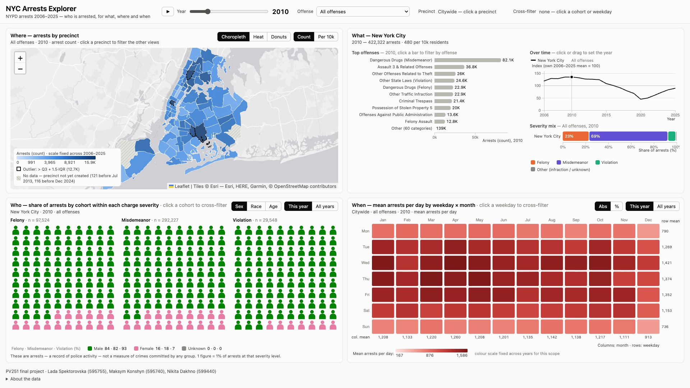
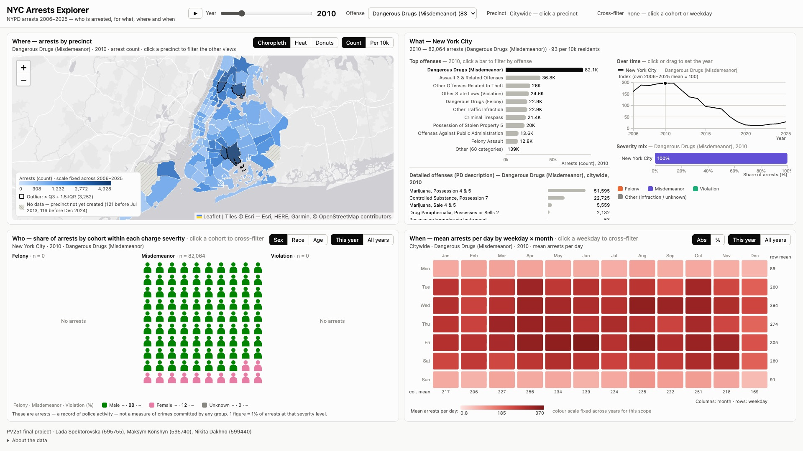
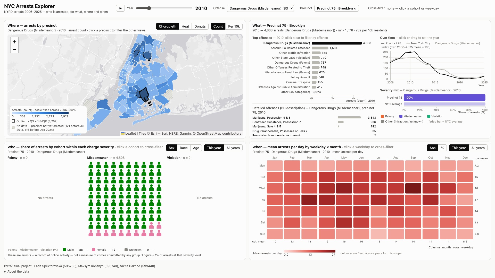
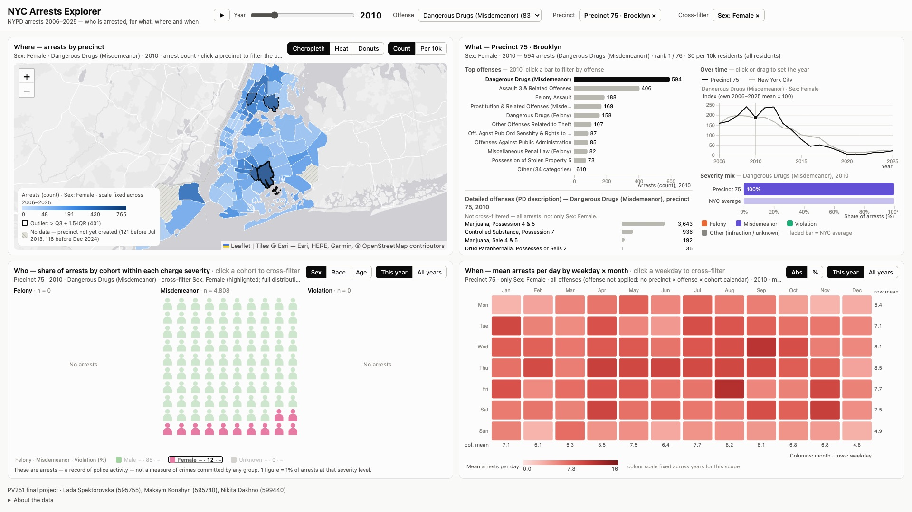
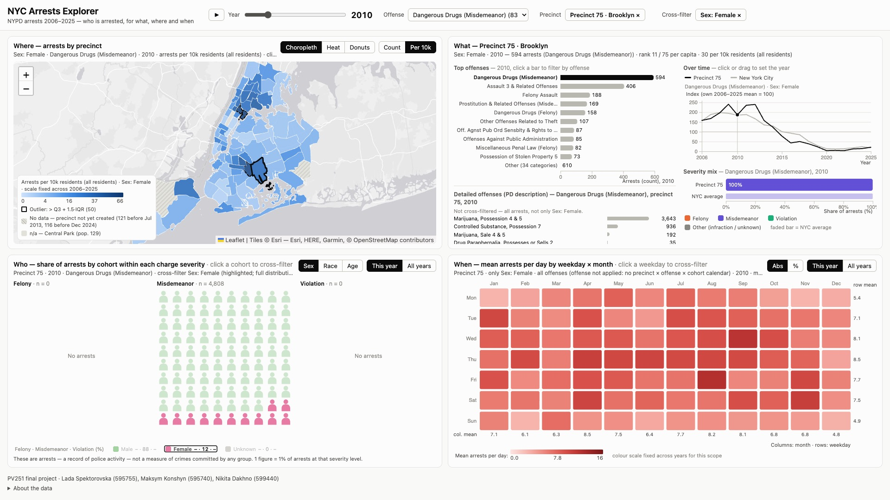
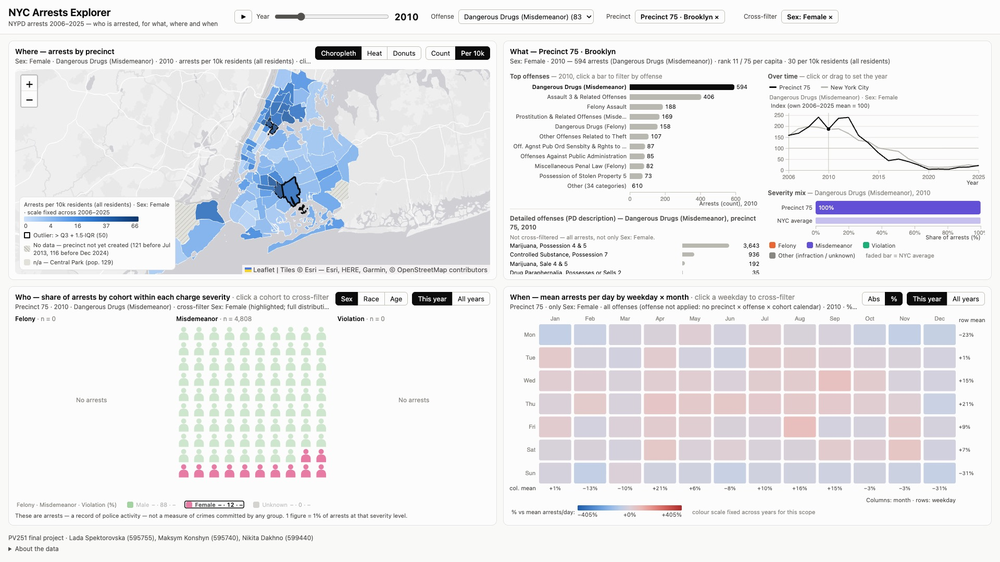
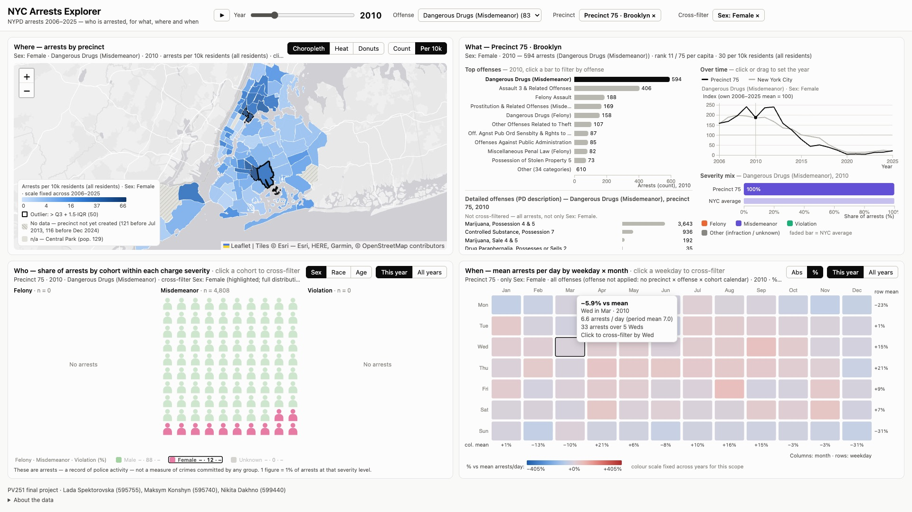

A
Map
Where
PV251 Visualization · Seminar group 5 · Final design
Two decades of NYPD arrests: who gets arrested, for what, where and when.
Lada Spektorovska
595755
Maksym Konshyn
595740
Nikita Dakhno
599440
01 · Topic & data
6,264,978
arrests, 2006–2025
78
precincts
77
offense categories
422k → 140k
arrests per year, 2010 → 2020
Who
Sex, race and age vs. charge severity
What
Most common offenses per precinct and year
Where
Precincts with unusually many arrests
When
Long-term trend and seasonality
Arrests are a record of police activity, not of crimes committed.
2025: sex and age are missing for ~53% of records, so demographic views default to 2024.
Source: NYPD Arrests Data (Historic), NYC Open Data

02 · Final design sheet
Our combined design: one 2×2 dashboard, one view per question.
A
Map
Where
B
Precinct detail
What
C
Waffles
Who
D
Calendar
When
A
Where — precincts with unusually many arrests
EncodingPrecinct choropleth, switchable to density heat or donut clusters
WhyCount or per 10k residents, so big precincts don’t dominate
B
What — most common offenses per precinct and year
EncodingTop offenses as sorted bars, a trend line over the years, a severity-mix bar
WhyRanking, trend and mix of one precinct side by side
C
Who — sex, race and age vs. charge severity
Encoding10×10 isotype waffles per severity, 1 figure = 1%
WhyShares are countable and comparable across severities
D
When — long-term trend and seasonality
EncodingWeekday × month calendar heatmap, absolute or % deviation
WhySeparates the overall level from seasonality
Linked filtering
Click a precinct in A — B, C and D follow
Layer switching
Choropleth · density heat · donut clusters
Count / per 10k
Normalise by population
Abs / %
Calendar in raw counts or row-normalised shares
One 2×2 dashboard, one view per question.
A
Map
Where
B
Precinct detail
What
C
Waffles
Who
D
Calendar
When
Severity colours stay fixed:
03 · From sketch to working version
AMap
BPrecinct detail
CWaffles
DCalendar








04 · Interactivity
Linked views, driven by clicksevery view filters the others
Year slider + play
2024 → 2010step or animate through 2006–2025
Offense filter
Dangerous Drugs (Misd.)every view narrows to one category
Click a precinct
Precinct 75, Brooklyndetail, waffles and calendar follow
Click a cohort
Sex: Femalecross-filters the map, detail and calendar
Toggle
Count → per 10kmap normalised by population
Toggle
Abs → %calendar as deviation from the mean
Tooltips everywhere
Hover any markexact values on every mark
05 · Implementation
Source
NYPD Arrests Data (Historic): 6,264,978 rows, 2006–2025
Build script
prep/build_data.pyPython. Aggregates server-side with SoQL — raw rows never downloaded. Responses cached, totals reconciled.
Output
Count cube, calendar, demographics, per-precinct and cross-filter files, precinct GeoJSON
Browser
No server: static files hosted on GitHub Pages
Checks: precinct cube 6,264,974 + 4 arrests in precincts without a polygon = 6,264,978. The 7,116 rows without usable coordinates are missing only from the heat layer.
Changed from the sheet: it planned Python + Dash + Plotly; we built a static D3 + Leaflet site — no server to host or keep running.
Remaining: report and video.
Try it live
Lada Spektorovska · Maksym Konshyn · Nikita Dakhno — PV251, seminar group 5